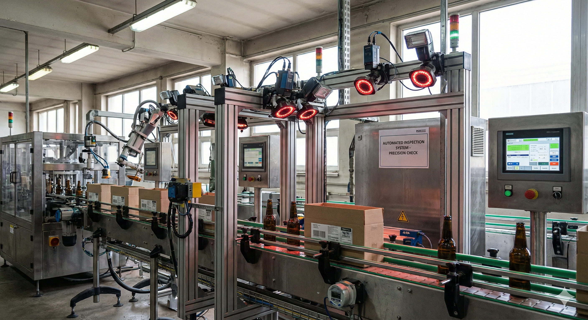

26/01/2026
Endüstriyel Görüntü İşleme Nedir?
Endüstriyel görüntü işleme, üretim süreçlerinde otomasyonu artıran kritik bir teknolojidir. Bu teknoloji, üretim hattında ürünlerin hatasız bir şekilde kontrol edilmesini ve kalitenin korunmasını sağlar. Endüstriyel görüntü işlemenin üretim hattındaki rolü, kameralar ve görüntü sensörleri aracılığıyla ürünlerin anlık olarak incelenmesini içerir. Üretim sürecindeki en küçük detayları bile algılayabilen bu sistem, insan müdahalesini azaltarak hatalardan doğan kayıpları minimize eder. Kalite kontrol sistemlerinde ise endüstriyel görüntü işleme, hassas ölçümler ve hata ayıklamaları ile yüksek standartların korunmasına yardımcı olur. Bu tür bir teknoloji, otomotivden elektronik cihazlara kadar geniş bir yelpazede uygulanabilir.

Endüstriyel Görüntü İşleme Nedir?
Endüstriyel görüntü işleme, üretim süreçlerinin otomatikleştirilmesi ve daha verimli hale getirilmesi için kritik bir rol oynar. Bu teknoloji, endüstriyel otomasyon sistemlerinin ayrılmaz bir parçasıdır ve makine görüsü çözümleri ile birleştiğinde fabrikalardaki kalite kontrol, hata tespiti ve süreç iyileştirmeleri gibi alanlarda büyük avantajlar sunar. Görüntü işleme teknolojileri, işletmelerin hızlı ve doğru kararlar almasına olanak tanır ve böylece rekabetçiliklerini artırır. Bu nedenle, endüstriyel görüntü işleme, modern üretim tesislerinin vazgeçilmez bir unsuru haline gelmiştir.
Endüstriyel Görüntü İşlemenin Kullanım Alanları
Kalite kontrol süreçlerinde hata tespiti, ürün veya parça tanımlama ve sınıflandırma, robotik sistemi yönlendirme ve kontrol, ambalaj ve etiketleme doğruluğu sağlama, üretim hatlarındaki hız ve verimliliği artırma, güvenlik sistemlerinin optimizasyonu, lojistik ve depo otomasyonu gibi alanlar temel kullanım sahalarıdır.
Endüstriyel görüntü işleminin yenilikçi yapısı, işletmelere süreçleri daha etkili bir şekilde yönetme yeteneği sağlar. Görsel verilerin gerçek zamanlı analizi ile hatlar üzerinde hızlı aksiyon alınabilir ve böylece hatalar minimize edilir. Ayrıca, bu teknoloji ile verimlilik artmakta ve maliyetler azaltılmaktadır. Endüstriyel otomasyonun önemli bir parçası olan bu sistemler, yalnızca üretim hattında değil, lojistik ve depo otomasyonunda da önemli kolaylıklar sağlar. Makine görüsü çözümleri ile birleştirilen bu süreçler, işletmelere rekabet avantajı sağlamakta ve endüstriyel yenilikleri daha ileri taşımaktadır.
Endüstriyel Görüntü İşlemenin Üretim Hattındaki Rolü
Endüstriyel görüntü işleme, modern üretim hatlarında giderek daha fazla önem kazanmaktadır. Teknolojinin gelişmesiyle birlikte, üretim süreçlerinde daha yüksek hassasiyet ve hız gereksinimi ortaya çıkmıştır. Endüstriyel görüntü işleme teknolojileri, bu gereksinimleri karşılayarak kalite kontrol, hata tespiti ve ürün standartlarına uygunluğu sağlama konusunda kilit bir rol oynamaktadır.
Üretim Süreçlerinde Görüntü İşleme
Üretim süreçlerinde görüntü işleme, çeşitli endüstrilerde geniş bir uygulama alanına sahiptir. Özellikle otomotiv, elektronik ve gıda sektörleri, endüstriyel görüntü işleme teknolojileri sayesinde ürünlerinin kalitesini ve güvenilirliğini artırmaktadır. Bu teknoloji, hatalı ürünlerin hızlı bir şekilde tespit edilmesi ve ayrılması ile üretim hattı denetimi süreçlerini iyileştirmektedir. Ayrıca, üretim hatlarındaki robotik sistemlerle entegre çalışarak, insan gücünü minimize eder ve işletmelerin verimliliğini artırır.
Üretim Hattı Denetimi Yöntemleri
Üretim hattı denetiminde kullanılan yöntemler, işleme sürelerini kısaltarak maliyetleri düşürür ve ürün kalitesini artırır. Görüntü işleme sistemleri, kameralar ve yapay zekâ algoritmaları ile çalışır ve bu sistemler hatalı üretimlere hızlı tepkiler vererek hataları minimize eder. Aşağıda, üretim hattı denetimi için izlenmesi gereken adımlar listelenmiştir.
Üretim Hattı Denetimi İçin Adımlar
Görüntüleme sisteminin kurulumunu ve kalibrasyonunu gerçekleştirin. Yapay zekâ algoritmalarını hatalı ürünleri tespit edecek şekilde yapılandırın. Görüntü işleme cihazlarını üretim hattına entegre edin. Görsel verilerin analizini yaparak sistem performansını izleyin. Üretim sürecinde belirlenen hataları barındıran ürünleri otomatik olarak ayırın. Raporlama ve geri bildirim mekanizmalarını kurarak sürekli iyileştirme sağlayın.
Endüstriyel görüntü işleme sistemlerinin üretim hattı denetimindeki rolü, işletme verimliliğini artırmak ve işletmenin rekabet gücünü yükseltmek açısından öncelikli hale gelmiştir. Bu sistemler, insan kaynaklı hataları azaltarak ve proses verimliliğini güçlü bir şekilde artırarak üretim süreçlerinde devrim yaratmaktadır.
Kalite Kontrol Sistemlerinde Görüntü İşleme
Endüstriyel görüntü işleme, kalite kontrol sistemlerinde kritik bir rol oynamaktadır. Üretim hattındaki bu yenilikçi teknoloji, ürün kalitesinin sürekliliğini sağlamak amacıyla çeşitli otomatik süreçler kullanır. Bu süreçler, üretimde yapay zekâ ile entegre edilerek hem maliyetleri düşürür hem de işletmelerin pazar rekabetini artırır. Endüstriyel görüntü işleme, farklı sektörlerdeki üretim süreçlerini otomatikleştirerek insan hatalarını minimize eder.
Kalite Kontrol Sistemlerinin Avantajları
Zaman ve maliyet tasarrufu sağlar. Üretim süreçlerinde sürekli ve doğru izleme yapar. Yüksek hassasiyet ile hata tespit eder. İnsan hatasını en aza indirir. Verimliliği artırarak rekabet gücünü yükseltir. Çevresel etkileri azaltmak için optimize çözümler sunar. Entegre edilebilirliği sayesinde farklı sektörlere adapte olabilir.
Hızlı ve hassas ölçüm, endüstriyel görüntü işleme ile birleştiğinde, kalite kontrol süreçlerinde devrim yaratmaktadır. Bu sistemler, milisaniyeler içinde yüksek hassasiyetle ölçüm yaparak her bir ürünün kaliteli olduğunu garanti eder. Özellikle, otomotiv, elektronik ve gıda sektörlerinde, hızlı veri işleme yetenekleri üretim verimliliğini artırır.
Verimliliği Artırma Çözümleri
Verimliliği artırmanın yolları arasında üretim sürecini optimize etmek ve hataları erken aşamada tespit etmek yer alır. Endüstriyel görüntü işleme, bu optimizasyonları mümkün kılar. Üretimde yapay zekanın da etkisiyle, bu sistemler, hammaddeden son ürüne kadar her aşamada maksimum verimlilik sağlar. Bu durum, üreticilerin piyasa taleplerine hızlı ve etkili bir şekilde yanıt vermesine olanak tanır.
Endüstriyel Görüntü İşlemenin Geleceği
Endüstriyel görüntü işleme, üretim süreçlerindeki hız ve otomasyonun artırılmasında kritik bir rol oynamaktadır. Gelecek, bu teknolojinin daha da gelişmesiyle birlikte, yapay zeka ve makine öğrenmesi algoritmalarının entegrasyonu sayesinde daha akıllı ve daha bağımsız sistemler sunacaktır. Bu sistemler, üretim süreçlerini sadece otomatikleştirmekle kalmayacak, aynı zamanda kendini sürekli optimize eden ve geliştiren bir yapıya bürünecektir.
Gelecek İçin Stratejik Öneriler
Yapay Zekayı Entegre Edin: Yapay zekâ tabanlı çözümlere yatırım yaparak sistemlerin öğrenme kapasitelerini artırın. Veri Analizi Kapasitesini Geliştirin: Büyük veri analiz araçlarıyla süreçlerinizi daha verimli hale getirin. Esnek Üretim Hatları Kurun: Modüler sistemler ve robotik çözümlerle üretim hatlarınızı daha esnek hale getirin. Çalışan Eğitimine Yatırım Yapın: Teknolojik yeniliklerin benimsenmesi için çalışanlarınızı sürekli eğitin. Siber Güvenliği Güçlendirin: Hem veri bütünlüğünü sağlamak hem de üretim süreçlerini koruma altına almak için güvenlik önlemlerini artırın. Çevreci Teknolojiler Kullanın: Sürdürülebilir üretim için enerji tasarrufu sağlayan çözümleri tercih edin. İnovasyonu Teşvik Edin: Araştırma ve geliştirme çalışmalarına yatırım yaparak yeni teknolojilerin öncüsü olun.
Bu öneriler doğrultusunda, endüstriyel görüntü işleme teknolojisinin geleceği, sadece endüstriyel üretimde değil, aynı zamanda günlük yaşamdaki yeniliklerde de etkisini gösterecektir. Özellikle otomotiv, elektronik ve sağlık gibi sektörlerde, bu teknolojinin getireceği dönüşümler, üretim ve kalite kontrol süreçlerini iyileştirerek rekabet avantajı sağlayacaktır.
Sık Sorulan Sorular
Endüstriyel görüntü işlemenin temel avantajları nelerdir? Endüstriyel görüntü işleme, üretim süreçlerinde otomasyon, hız, hassasiyet ve tutarlılık sağlar. İnsan hatalarını en aza indirir ve iş gücü maliyetlerini düşürür.
Hangi endüstriler endüstriyel görüntü işleme teknolojilerini kullanır? Endüstriyel görüntü işleme, otomotiv, elektronik, gıda ve ilaç endüstrileri gibi birçok sektörde yaygın olarak kullanılmaktadır.
Endüstriyel görüntü işleme, kalite kontrol süreçlerini nasıl iyileştirir? Bu teknoloji, üretim sırasında ürünlerin boyut, biçim ve yüzey kalitesini yüksek hassasiyetle inceleyerek kalitesizlik ihtimalini minimize eder ve toplam kaliteyi artırır.
Endüstriyel görüntü işleme sistemlerinin kurulumu zorlu mudur? Kurulum zorluğu, sistemin karmaşıklığına ve uygulama alanına bağlıdır. Ancak, gelişen teknoloji ile bu süreçler daha kullanıcı dostu hale gelmiştir.
Görüntü işleme teknolojisinin üretim maliyetlerine etkisi nedir? Başlangıç yatırımı gerektirse de uzun vadede üretim hızını artırarak ve insan kaynaklı hataları azaltarak maliyetleri düşürür.
Endüstriyel görüntü işleme sistemleri nasıl çalışır? Bu sistemler, kameralar ve görüntü sensörleri aracılığıyla alınan görüntüleri analiz eder ve yazılım algoritmaları kullanarak belirli özellikleri denetler veya ölçer.
Bu teknoloji, üretim sürecinde insan faktörünü tamamen ortadan kaldırır mı? Endüstriyel görüntü işleme, insan müdahalesini azaltabilir ancak tamamen ortadan kaldırmaz; insan denetimi ve sistemi izleme her zaman önemlidir.
Endüstriyel görüntü işlemenin gelecekteki yenilikleri neler olabilir? Yapay zekâ ve makine öğrenimi entegrasyonu ile daha akıllı ve özerk sistemler geliştirilecek, dolayısıyla daha karmaşık işlemler de otomatikleştirilebilecektir.
Hangi tür görüntü işleme sistemleri vardır? 2D görüntü işleme, 3D görüntü işleme, termal görüntüleme ve spektral analiz gibi farklı tür görüntü işleme sistemleri mevcuttur.